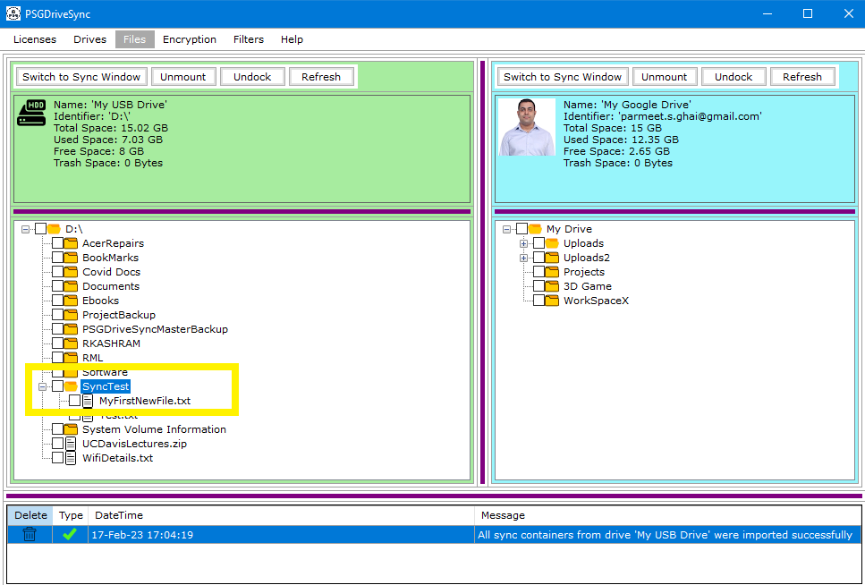

Creating a new file or folder works quite the same as it does in any windows operating system. This option is only available in "Files" window browse mode. Following are the steps needed to be performed in order to create a new file or folder
|
1 |
This option is only available for folders so you need to first right click on the folder in which you would like the new file or folder to show up at and that should bring up various file and folder operation among them will be "New". Please click on "New" and then either "File" or "Folder" depending on what you want to create. |
|
|
2 |
When you click on "File" or "Folder" in the previous step then that will bring up a pop up window asking you to provide the name of the new file or folder. This is where you type in the new name and click on "Create New File" or "Create New Folder". |
|
|
3 |
Review the folder that you right clicked on in step 1. You should see your newly created file or folder in that parent folder. |
 |